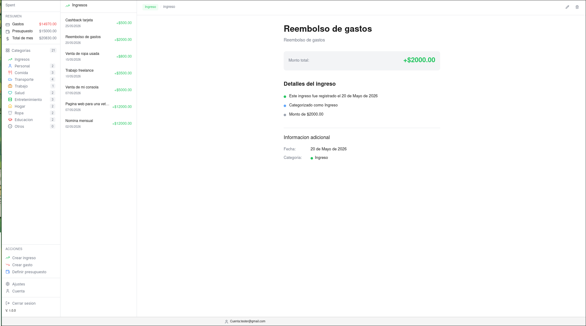

Noticias
Actualizaciones del proyecto
Aun no hay actualizaciones disponibles.
Vuelve pronto para ver las ultimas noticias sobre Spent.
Spent
Gestion de ingresos y gastos personales

Sobre la app
Spent es una aplicacion de escritorio para gestionar tus gastos e ingresos personales. Esta disenada para mantener un control simple y efectivo de tus finanzas.
Es gratuita, de codigo abierto y no requiere conexion a internet. Tus datos se quedan en tu computadora.
Ideal para:
- Controlar tus gastos del dia a dia
- Ver cuanto dinero te sobra
- Ordenar tus finanzas por categorias
- Llevar historial de todo
Que puedes hacer
Registrar
Anota cada gasto o ingreso con detalles que te ayuden a recordar.
- Gastos e ingresos
- Cada transaccion con titulo y descripcion
- Categorias por color
- Agregar notas
Organizar
Encuentra lo que necesitas rapido y ve tu dinero en cualquier momento.
- Ver balance total en tiempo real
- Buscar transacciones
- Filtrar por mes o categoria
- Marcar favoritos
- Exportar tus datos
Para desarrolladores
Por que estas tecnologias
- Tauri - Apps desktop rapidas y ligeras, menor tamanho que Electron
- Vanilla JS - Sin frameworks, sin bundlers complejos, ideal para apps simples
- Express - Estandar para APIs REST con Node.js
- Bun - Runtime mas rapido que Node.js para el servidor
- SQLite - Base de datos local, sin instalar servidores adicionales
- JWT + bcrypt - Autenticacion segura sin estado
Arquitectura
Patron MVC en Express: Cliente -> Routes -> Controller -> Database
Modelos de Datos
- usuarios - id, email, nombre, contrasena (hash), fechas
- categorias - id, categoria, color, tipo (gasto/ingreso), idUsuario
- gastos - id, monto, descripcion, fecha, idUsuario, idCategoria
API Endpoints
- POST /usuarios/register - Crear cuenta
- POST /usuarios/login - Iniciar sesion (devuelve JWT)
- GET/POST/PUT/DELETE /categorias - CRUD categorias (JWT)
- GET/POST/PUT/DELETE /gastos - CRUD gastos (JWT)
Estructura de Carpetas
- /src - Frontend (Vanilla JS)
- /express/src - Backend API
- /src-tauri - App desktop (Rust)
Variables de Entorno
- PORT - Puerto del servidor (default 3000)
- JWT_SECRET - Clave secreta para tokens
Instalar y Ejecutar
- git clone del repositorio
- bun install
- bun run express/src/index.ts
Build
- bun run tauri build
- Ejecutable generado en src-tauri/target/release
Requisitos
- Node.js
- Bun
- Rust
- Git